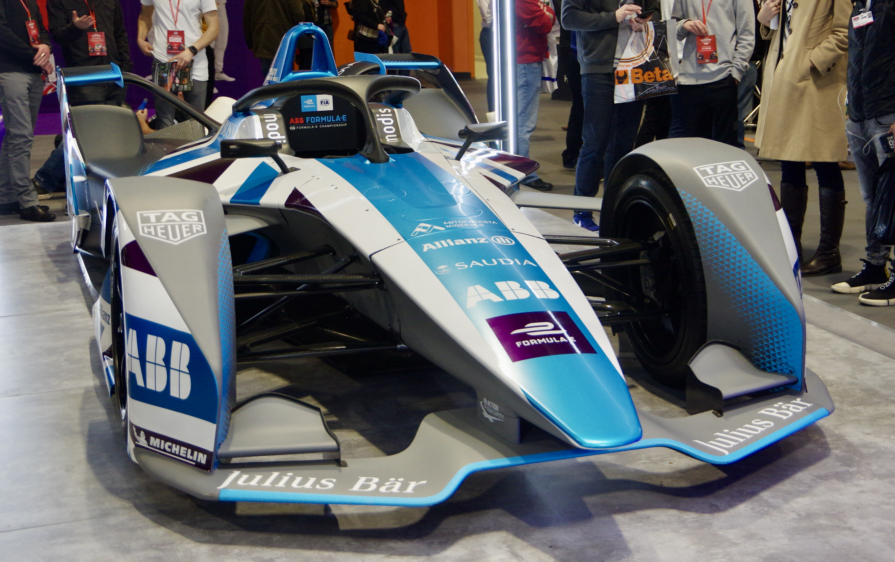
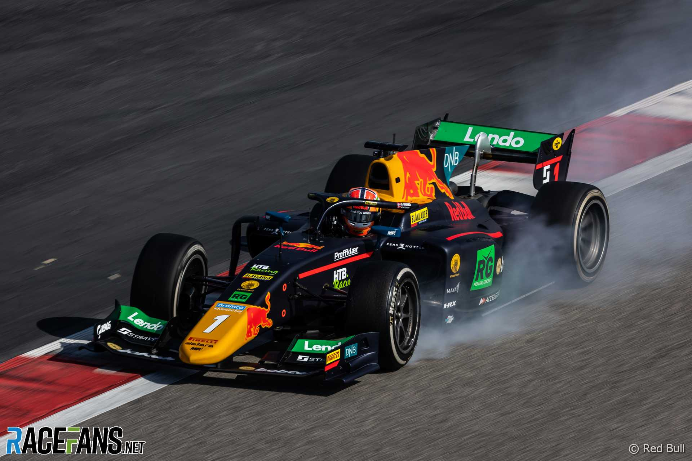
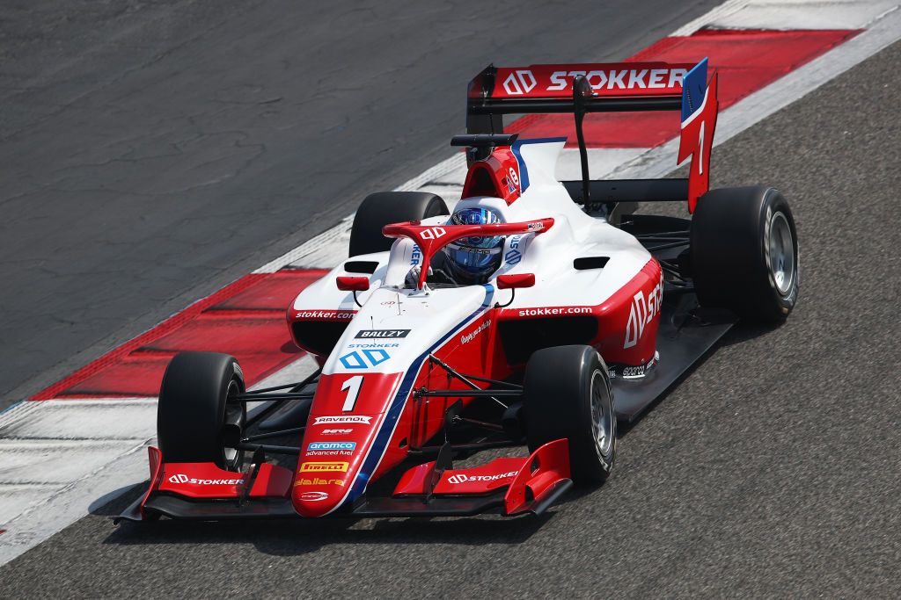

Formule E

Formule E is een internationaal kampioenschap voor volledig elektrische raceauto’s en werd opgericht in 2014 door de FIA. De serie richt zich op duurzaamheid en technologische innovatie, met races in stadscentra over de hele wereld, zoals New York, Parijs en Hong Kong. De auto’s zijn volledig elektrisch, waardoor ze geen uitlaatgassen produceren en stil rijden in vergelijking met traditionele Formule 1-auto’s. Ondanks de lagere snelheid dan F1, zijn de races spectaculair door korte circuits, veel inhaalacties en strategisch energiebeheer van de batterij. Formule E trekt zowel jonge talenten als ervaren coureurs, en fabrikanten zoals Mercedes, Porsche en Jaguar gebruiken de serie om nieuwe technologieën te testen die later in reguliere auto’s kunnen worden toegepast.
Formule 2

Formule 2 (F2) is de directe opstapklasse naar de Formule 1 en richt zich op jonge coureurs die zich voorbereiden op de top van de autosport. De auto’s zijn krachtig en technisch complexer dan in lagere klassen, maar identiek voor alle teams, zodat talent en race-inzicht centraal staan. F2-races vinden vaak plaats tijdens Formule 1-weekenden, waardoor coureurs ervaring opdoen op dezelfde circuits en onder dezelfde druk. Een belangrijk verschil met F3 is dat F2-auto’s sneller zijn, meer vermogen hebben en geavanceerdere aerodynamica gebruiken, waardoor het een belangrijk trainingskamp is voor toekomstige F1-coureurs. Strategie, bandenbeheer en pitstops spelen in F2 ook een grotere rol dan in F3.
Formule 3

Formule 3 (F3) is een instapklasse voor jonge coureurs die net beginnen aan hun carrière in internationale open-wielraces. De auto’s zijn minder krachtig en eenvoudiger dan in F2, waardoor het vooral draait om racevaardigheden en het aanleren van race-intelligentie. F3-races zijn meestal korter, met minder strategische elementen zoals pitstops, en vinden vaak plaats als ondersteunende races tijdens Formule 1-weekenden. Het belangrijkste verschil met F2 is dat F3 de eerste echte stap naar internationale competitie is: het legt de nadruk op leren in een competitieve omgeving, terwijl F2 meer een voorbereiding op het niveau en de snelheid van de Formule 1 biedt.